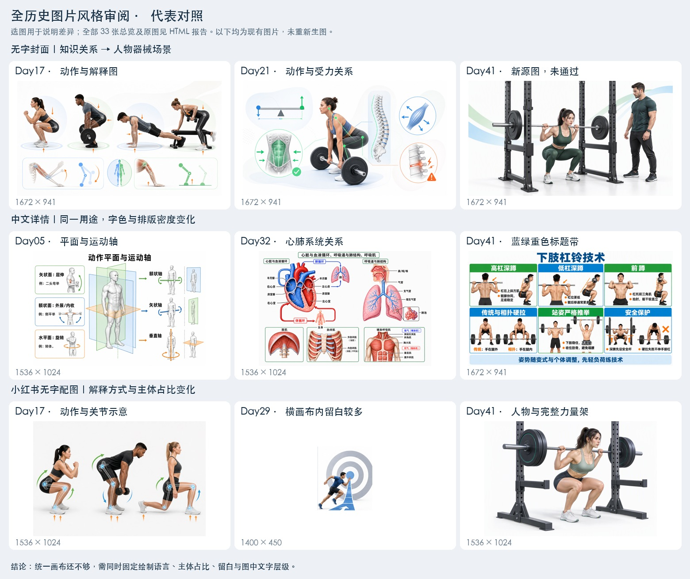

画面重心从知识关系移向人物场景
历史中反复出现白底、解剖剖面、运动方向和受力关系。早期也有写实人物，但通常配合解释图。Day40、尤其 Day41 更突出人物外形、皮肤、完整器械和场景，教材插画感变弱。
图片风格审阅 · 2026.09.17
已对照全部现存的 HTML 有字／无字图、小红书成图与原始配图，以及 Day41 新源图。问题来自画风、图中文字层级与主体占比；历史图片的格式也需要统一。
HTML：Day01–40；小红书：Day01–32、Day40。Day11 详情文件存在，但当前正文未引用。33 张小红书封面已包含在 310 张成图内，不重复累计。审阅重点为风格、比例与信息排布。
历史中反复出现白底、解剖剖面、运动方向和受力关系。早期也有写实人物，但通常配合解释图。Day40、尤其 Day41 更突出人物外形、皮肤、完整器械和场景，教材插画感变弱。
40 个详情图文件共有 11 种尺寸，横版、竖版、长图混用。Day41 又使用大蓝标题、浓绿蓝标题带与六个等分格，整体更接近训练海报。历史中的黑色标题、浅色分区与细线可作为共同基准。
310 张最终 PNG 全部是 1080×1440；297 张源图却有 30 种尺寸，且有图标、临床人物、蓝底方图等不同处理。相同外框无法自动统一图片的风格、主体大小与留白。
我之前锁定了页面组件，没有把图片本身的风格和比例一起锁定。只写“白底、半写实 3D”的通用提示词，约束不足。
| 类别 | 文件数 | 尺寸种类 | 最常见尺寸 |
|---|
原图目录含备选版本和拼图，不等于全部都在最终页面使用。实际成品与源图分别核查；HTML 详情以页面实际引用为主，Day11 的未使用文件已单独标记。
可切换任何现存课程；点击图片可打开原尺寸。Day41 显示的是源图，不能视作最终小红书海报。

统一为白底、轻体积感的医学／运动科学解释插画，保留适度真实的人体、准确的结构与有意义的箭头。按学科选择主图、局部图、流程或对照；同一用途固定比例、字色、主体大小与留白。
| 用途 | 目标格式 | 固定规则 |
|---|---|---|
| 无字封面 | 1600×900 · 16:9 | 核心知识主体＋必要解释细节；无字、无品牌。 |
| 中文详情／总览内图 | 1536×1024 · 3:2 | 黑色标题、浅色分区、短标签与清楚的关系图。 |
| 小红书知识配图 | 1400×450 · 28:9 | 同一知识点横向组织，固定主体高度，检查实际留白。 |
| 小红书最终海报 | 1080×1440 · 3:4 | 继续使用已验收的共用页面组件。 |
当前知识页图片区为 936×240。使用 contain 时，3:2 源画布显示约 360×240；1400×450 显示约 747×240。这只是画布占位：Day29 的横图本身已经有大量白边，可见主体会更窄。只补白或改文件尺寸，不能真正统一效果。
后续样图必须同时比较实际主体边界、关键关系、整页与手机预览。不能拉伸人物、截断器械，或用无关场景撑满画面。参考图用于提示词与目检；当前生图脚本没有自动附带参考图。
本次已逐张看过全部总览。选择类别与页码可查看历史连续变化；点击总览可放大原图。
11 张源图均保留，图片风格未通过；低杠杠位、前架手肩关系另有内容问题。未生成 Day41 最终小红书 PNG 或 ZIP。本次风格审阅没有新增生图请求，也没有替换历史图片。
下一步是在明确授权的样图范围内，先验证封面、有字详情、知识页配图三个用途，再检验实际共用模板效果。当前审核状态继续拦住后续生成与发布。